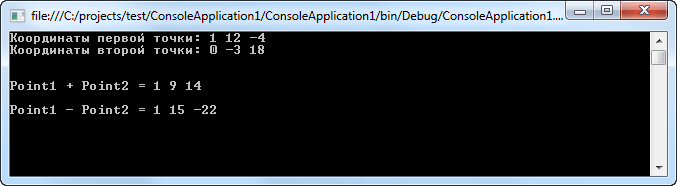
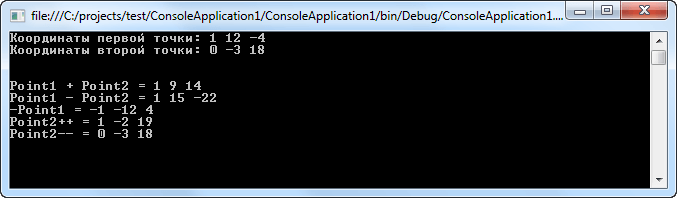
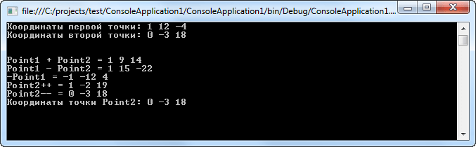

| Тема 4. Основы перегрузки операторов. | ||
| Назад | ||
|
В C#, подобно любому языку программирования, имеется готовый набор лексем, используемых для выполнения базовых операций над встроенными типами. Например, известно, что операция + может применяться к двум целым, чтобы дать их сумму: // Операция + с целыми. int а = 100; int b = 240; int с = а + b; //с теперь равно 340 Здесь нет ничего нового, но задумывались ли вы когда-нибудь о том, что одна и та же операция + может применяться к большинству встроенных типов данных C#? Например, рассмотрим такой код: // Операция + со строками.
string si = "Hello";
string s2 = " world!";
string s3 = si + s2; // s3 теперь содержит "Hello world!"
По сути, функциональность операции + уникальным образом базируются на представленных типах данных (строках или целых в данном случае). Когда операция + применяется к числовым типам, мы получаем арифметическую сумму операндов. Однако когда та же операция применяется к строковым типам, получается конкатенация строк. Язык C# предоставляет возможность строить специальные классы и структуры, которые также уникально реагируют на один и тот же набор базовых лексем (вроде операции +). Имейте в виду, что абсолютно каждую встроенную операцию C# перегружать нельзя. В следующей таблице описаны возможности перегрузки основных операций: Операция C# Возможность перегрузки +, -, !, ++, --, true, false Этот набор унарных операций может быть перегружен
+, -, *, /, %, &, |, ^, <<, >> Эти бинарные операции могут быть перегружены
==, !=, <, >, <=, >= Эти операции сравнения могут быть перегружены. C# требует совместной перегрузки "подобных" операций (т.е. < и >, <= и >=, == и !=)
[] Операция [] не может быть перегружена. Oднако, аналогичную функциональность предлагают индексаторы
() Операция () не может быть перегружена. Однако ту же функциональность предоставляют специальные методы преобразования
+=, -=, *=, /=, %=, &=, |=, ^=, <<=, >>= Сокращенные операции присваивания не могут перегружаться; однако вы получаете их автоматически,
перегружая соответствующую бинарную операцию
Перегрузка операторов тесно связана с перегрузкой методов. Для перегрузки оператора служит ключевое слово operator, определяющее операторный метод, который, в свою очередь, определяет действие оператора относительно своего класса. Существуют две формы операторных методов (operator): одна - для унарных операторов, другая - для бинарных. Ниже приведена общая форма для каждой разновидности этих методов: // Общая форма перегрузки унарного оператора. public static возвращаемый_тип operator op(тип_параметра операнд) { // операции } // Общая форма перегрузки бинарного оператора. public static возвращаемый_тип operator op(тип_параметра1 операнд1, тип_параметра2 операнд2) { // операции } Здесь вместо op подставляется перегружаемый оператор, например + или /, а возвращаемый_тип обозначает конкретный тип значения, возвращаемого указанной операцией. Это значение может быть любого типа, но зачастую оно указывается такого же типа, как и у класса, для которого перегружается оператор. Такая корреляция упрощает применение перегружаемых операторов в выражениях. Для унарных операторов операнд обозначает передаваемый операнд, а для бинарных операторов то же самое обозначают операнд1 и операнд2. Обратите внимание на то, что операторные методы должны иметь оба спецификатора типа - public и static. Перегрузка бинарных операторов Давайте рассмотрим применение перегрузки бинарных операторов на простейшем примере: using System; using System.Collections.Generic; using System.Linq; using System.Text; namespace ConsoleApplication1 { class MyArr { // Координаты точки в трехмерном пространстве public int x, y, z; public MyArr(int x = 0, int y = 0, int z = 0) { this.x = x; this.y = y; this.z = z; } // Перегружаем бинарный оператор + public static MyArr operator +(MyArr obj1, MyArr obj2) { MyArr arr = new MyArr(); arr.x = obj1.x + obj2.x; arr.y = obj1.y + obj2.y; arr.z = obj1.z + obj2.z; return arr; } // Перегружаем бинарный оператор - public static MyArr operator -(MyArr obj1, MyArr obj2) { MyArr arr = new MyArr(); arr.x = obj1.x - obj2.x; arr.y = obj1.y - obj2.y; arr.z = obj1.z - obj2.z; return arr; } } class Program { static void Main(string[] args) { MyArr Point1 = new MyArr(1, 12, -4); MyArr Point2 = new MyArr(0, -3, 18); Console.WriteLine("Координаты первой точки: " + Point1.x + " " + Point1.y + " " + Point1.z); Console.WriteLine("Координаты второй точки: " + Point2.x + " " + Point2.y + " " + Point2.z + "\n"); MyArr Point3 = Point1 + Point2; Console.WriteLine("\nPoint1 + Point2 = " + Point3.x + " " + Point3.y + " " + Point3.z); Point3 = Point1 - Point2; Console.WriteLine("\nPoint1 - Point2 = " + Point3.x + " " + Point3.y + " " + Point3.z); Console.ReadLine(); } } } Использование перегрузки бинарных операторов в C#  Перегрузка унарных операторов Унарные операторы перегружаются таким же образом, как и бинарные. Главное отличие заключается, конечно, в том, что у них имеется лишь один операнд. Давайте модернизируем предыдущий пример, дополнив перегрузки операций ++, --, -: using System; using System.Collections.Generic; using System.Linq; using System.Text; namespace ConsoleApplication1 { class MyArr { // Координаты точки в трехмерном пространстве public int x, y, z; public MyArr(int x = 0, int y = 0, int z = 0) { this.x = x; this.y = y; this.z = z; } // Перегружаем бинарный оператор + public static MyArr operator +(MyArr obj1, MyArr obj2) { MyArr arr = new MyArr(); arr.x = obj1.x + obj2.x; arr.y = obj1.y + obj2.y; arr.z = obj1.z + obj2.z; return arr; } // Перегружаем бинарный оператор - public static MyArr operator -(MyArr obj1, MyArr obj2) { MyArr arr = new MyArr(); arr.x = obj1.x - obj2.x; arr.y = obj1.y - obj2.y; arr.z = obj1.z - obj2.z; return arr; } // Перегружаем унарный оператор - public static MyArr operator -(MyArr obj1) { MyArr arr = new MyArr(); arr.x = -obj1.x; arr.y = -obj1.y; arr.z = -obj1.z; return arr; } // Перегружаем унарный оператор ++ public static MyArr operator ++(MyArr obj1) { obj1.x += 1; obj1.y += 1; obj1.z +=1; return obj1; } // Перегружаем унарный оператор -- public static MyArr operator --(MyArr obj1) { obj1.x -= 1; obj1.y -= 1; obj1.z -= 1; return obj1; } } class Program { static void Main(string[] args) { MyArr Point1 = new MyArr(1, 12, -4); MyArr Point2 = new MyArr(0, -3, 18); Console.WriteLine("Координаты первой точки: " + Point1.x + " " + Point1.y + " " + Point1.z); Console.WriteLine("Координаты второй точки: " + Point2.x + " " + Point2.y + " " + Point2.z + "\n"); MyArr Point3 = Point1 + Point2; Console.WriteLine("\nPoint1 + Point2 = " + Point3.x + " " + Point3.y + " " + Point3.z); Point3 = Point1 - Point2; Console.WriteLine("Point1 - Point2 = " + Point3.x + " " + Point3.y + " " + Point3.z); Point3 = -Point1; Console.WriteLine("-Point1 = " + Point3.x + " " + Point3.y + " " + Point3.z); Point2++; Console.WriteLine("Point2++ = " + Point2.x + " " + Point2.y + " " + Point2.z); Point2--; Console.WriteLine("Point2-- = " + Point2.x + " " + Point2.y + " " + Point2.z); Console.ReadLine(); } } } Использование перегрузки унарных операторов  Выполнение операций со встроенными в C# типами данных Для любого заданного класса и оператора имеется также возможность перегрузить сам операторный метод. Это, в частности, требуется для того, чтобы разрешить операции с типом класса и другими типами данных, в том числе и встроенными. Давайте добавим следующую перегрузку в предыдущий пример: public static string operator +(MyArr obj1, string s) { return s + " " + obj1.x + " " + obj1.y + " " + obj1.z; } ... string s = Point2 + "Координаты точки Point2:"; Console.WriteLine(s);  Как подтверждает приведенный выше результат, когда оператор + применяется к двум объектам класса MyArr, то складываются их координаты. А когда он применяется к объекту типа MyArr и строковому значению, то возвращается строка с текущими координатами объекта. | ||
| Конспект подготовлен Бакулиным А. М. 2022 год. | ||